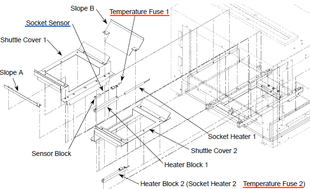

Service History
Subject: MMI displayed the socket temperature shows over 500oC
Handler Model: NS-7000 (Marvel Malaysia, S/N: 181202, Mfg: Jan 2007, MMI: 2.0f)
Controller: RC520
Date: 24 Mar 2008
Symptom
In January 2008, on MMI displayed the socket temperature shows over 500oC, Alan request for the PT sensor warranty claim.
Action
Replaced PT sensor but heater failed to heat to the preset temperature.
Thus request for the socket heater warranty claim. On 3 March 2008, replaced socket heater, found working fine.
On 19th March 2008, customer found socket heater malfunction. So 21st March 2008, me and Alan go to Marvell to check the heater and thermo fuse, found thermo fuse OK but socket heater open.
So would like to know the root cause or may be any suggestion to prevent this? Because it is unusual for socket heater to break in less then 3 weeks.
Based on our understanding. There are 2 socket heaters for NS7000 and the PT sensor is only mounted with socket heater 1 which is nearer to shuttle 1.
In this case, theoretically, if socket heater 2 is open, socket will still be able to heat up because the temperature is based on socket heater 1.
If socket heater 1 is open, you will be able to see temperature increase but unable to heat to set temperature. It is due to chamber heat up.
So which socket heater did you check is open? 2nd time is cannot heat up totally or same as 1st time where it cannot heat up to set temperature?

Socket heater cartridge, normally comes with thermo fuse and thermo fuse should blow first before the heater. So thermo fuse rating should be lower than the heater to protect the heater. For this case, I suggest to return the 2nd "OPEN" heater to EPSON for investigate because we do not know what is nature of this "OPEN". Maybe it is over current or over power, we do not know. Because if heater blown,
1) maybe thermo fuse spec is too high etc..
2) Or maybe for this case is quality issue?
3) Or the set temperature + offset exceeds the spec? How much is the offset?
Cause
Socket Heater spoilt.
Remarks
Socket Pt Sensor and Chamber Pt Sensor are of the same specification and same part code (spec: NR141-100S2-2.5-18-500TF(6F11)A3, part code: R35N700000300).